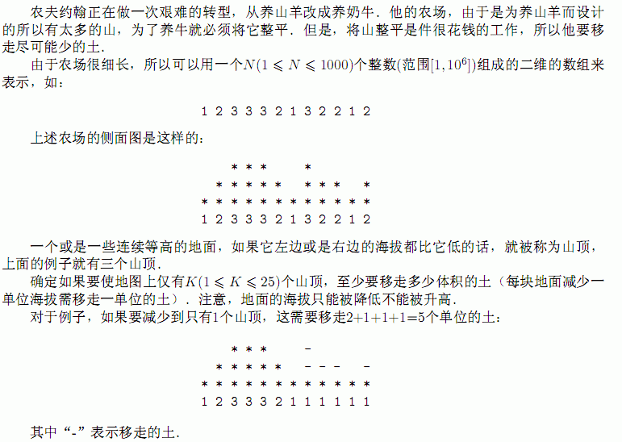

F.A.Qs
Home
Discuss
ProblemSet
Status
Ranklist
Contest
入门OJ
ModifyUser
Xeonacid
Logout
捐赠本站
Notice:
注册本OJ方式请见https://www.lydsy.com/JudgeOnline/wttl/thread.php?tid=5671
Problem 1749. -- [usaco2005 open]Landscaping 地形改造
1749: [usaco2005 open]Landscaping 地形改造
Time Limit:
5 Sec
Memory Limit:
64 MB
Submit:
63
Solved:
36
[
Submit
][
Status
][
Discuss
]
Description

Input
第
1
行输入整数
N
和
K.
之后
N
行，每行输入一个整数，表示这块地的海拔
Output
如果仅能有
K
个山顶至少要移走多少土．
Sample Input
12 1
1
2
3
3
3
2
1
3
2
2
1
2
Sample Output
5
HINT
Source
Gold
[
Submit
][
Status
][
Discuss
]
HOME
Back